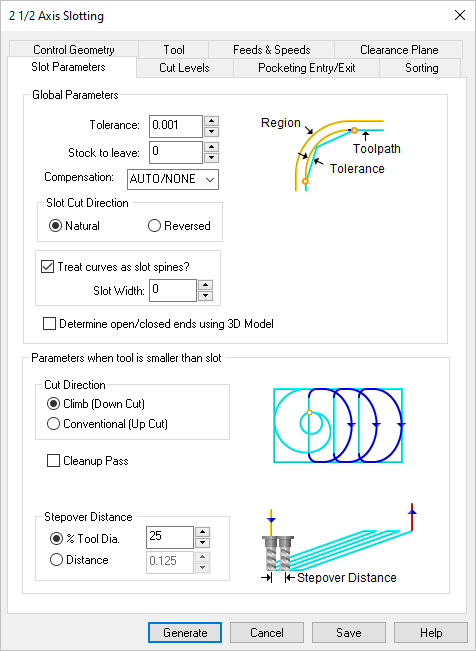
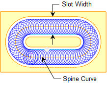

The following Slot Parameters tab allows you to define the cut parameters for the current Slotting operation. You can set Global Parameters, Cut Pattern, Cut Direction and the Stepover Distance via this tab of the operation dialog. The Global Parameters section allows you to set the tolerance value to be used in machining. A uniform thickness or stock that needs to be left around the part can also be specified here. Refer to each option below.
 Dialog Box: Slot Parameters tab, Slotting Operations |
This is the allowable deviation from the actual part geometry plus the Stock allowance (if any). In 2 Axis methods, this Tolerance is applied to XY motions only.  Tolerance
Stock This is the thickness of the layer that will remain on top of the part after the toolpath is complete. Roughing operations generally leave a thin layer of stock. For finishing operations this value is zero.  Stock This enables cutter compensation. The compensation direction, left or right, is determined by the Cut Direction selected (Climb or Conventional). |

For Cut Direction, select Natural to follow the direction as it is defined by the start/end points of the selected regions. Select Reversed to cut in the opposite direction. |
Check this box if you only have a spine curve(s) to define your slot and then enter the desired Slot Width in the filed provided. If the Slot Width is wider than the cutter diameter, a trochoidal toolpath pattern is created.  Slot from Spine Curves |
Check this box to automatically determine this cutting condition based on the 3D model. DO NOT check this box if you do not have a 3D model. |
Select Climb (Down Cut) and the tool will be maintained in a downward motion into the stock. ") Climb (Down Cut) Select Conventional (Up Cut) and the direction of the tool will be maintained in an upward motion out of the stock. ") Conventional (Up Cut)
|
 One of the basic concepts to understand in any milling operation is
One of the basic concepts to understand in any milling operation is Automatically detect corners that the tool could not reach between cut level and add a toolpath based on the uncut area detected. Either Linear or Offset cut patterns are used in these areas.
|

Specify the stepover distance for the current operation as a percentage of the active tool diameter (% Tool Dia) and then enter the percentage value.  % Tool Dia. Specify the stepover for the current operation as an exact Distance and then enter the distance value in the field provided. Distance |